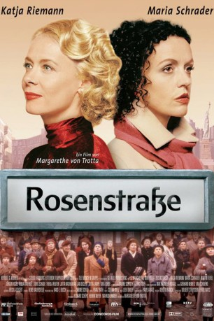
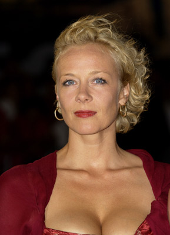
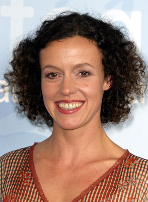
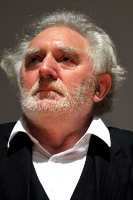
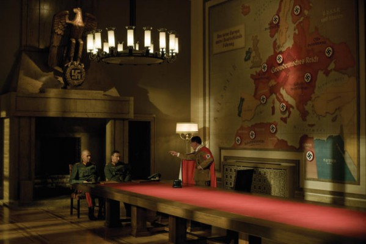
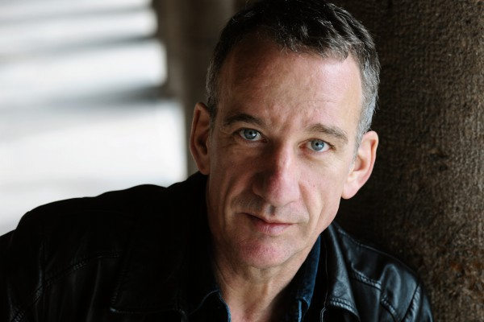
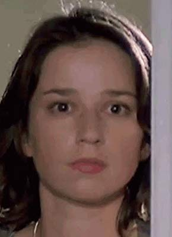

#10295 Rosenstraße
Alternativ: Rosenstrasse (Englischer Titel)
 
 IMDB-Wertung: 6.8 / 10
IMDB-Wertung: 6.8 / 10  Metascore: 49
Metascore: 49 
Nach dem Tod ihres Vaters erfährt die jüdische Journalistin Hannah, dass ihre Mutter Ruth während des Dritten Reiches von einer deutschen Frau gerettet worden ist. Sie reist nach Deutschland, um diese Frau zu finden und die geheimnisvolle Vergangenheit ihrer Mutter zu ergründen. Von der inzwischen 90-jährigen Lena Fischer erfährt sie vom Aufstand der Frauen in der Berliner Rosenstraße, die ihre jüdischen Familienmitglieder vor der Deportation retteten. Noch ahnt Hannah nicht, dass sie Dinge erfahren wird, die auch ihr eigenes Leben beeinflussen sollen...
Jahr: 2003
Dauer: 135 Minuten
FSK: 12
Land: Deutschland Studio: Concorde FilmverleihTonspuren:
Untertitel:
Auflösung: 1080p (1920x816) Größe: 7045 MB
Genre: Drama, Krieg
Regisseur: Margarethe von Trotta
Drehbuch: Pamela Katz, Margarethe von Trotta
Soundtrack: Loek Dikker
Darsteller:
-  Katja Riemann als Lena Fischer - age 33
-  Maria Schrader als Hannah Weinstein
- Jürgen Vogel als Arthur von Eschenbach
- Martin Feifel als Fabian Fischer
- Fedja van Huêt als Luis Marquez
- Romijn Conen als Ben
 Thekla Reuten als Klara Singer
Thekla Reuten als Klara Singer- Jutta Wachowiak als Frau Goldberg
-  Jan Decleir als Nathan Goldberg
- Carine Crutzen als Mutter Erika / Erika's Mother
 Isolde Barth als Mutter Fabian / Fabian's Mother
Isolde Barth als Mutter Fabian / Fabian's Mother-  Martin Wuttke als Joseph Goebbels
-  Heio von Stetten als Wolfgang von Welz
- Carl Achleitner als Sturmbannführer / SS-Officer
- Robert Dölle als Hans Singer
- Felix Moeller als
- Morris Perry als Tänzer im Club / Dancer in Club
- Doris Schade als Lena Fischer - age 90
- Jutta Lampe als Ruth Weinstein - age 60
- Svea Lohde als Ruth Weinstein - age 8
- Carola Regnier als Rachel Rosenbauer
- Plien van Bennekom als Marian
- Julia Eggert als Emily
-  Lena Stolze als Miriam Süßmann
- Edwin de Vries als Vater Erika / Erika's Father
- Lilian Schiffer als Erika Singer
- Sarah Nemitz als Adele
- Rainer Strecker als SS-Mann Schneider / SS-Man Schneider
- Peter Ender als Schupo 'Franz'
- Roland Silbernagl als Jüdsicher Ordner / Jewish Orderly
- Katalin Zsigmondy als Norissa
- Hans Peter Hallwachs als Vater von Eschenbach / Father von Eschenbach
- Gaby Dohm als Elsa von Eschenbach
- Fritz Lichtenhahn als Vater Fabian / Fabian's Father
- Nina Kunzendorf als Litzy
- Hans Kremer als Hauptsturmführer Weber
- Wolfgang Pregler als Herr Müller / Mr. Müller
- Claudia Rieschel als Kollegin Klara / Klara's Colleague
- Siemen Rühaak als Sturmbannführer / SS-Officer
- Burkhard Schmeer als Hauptscharführer
- Frank Behnke als Oberscharführer
- Harald Burmeister als
- Stacey Denham als Tänzerin im Club / Dancer in Club
- Lars-Kilian Falk als Der kranke Mann / The ill Man
- Uwe Fischer als
- Monika Häckermann als
- Ben Kropp als
- Jean-Pierre Le Roy als Gerichtsvollzieher
- Heinz Rilling als
- Johannes Schäfer als
Datei: X:\2003(N-Z)\Rosenstraße (2003, FSK12, 1920x816).mkv seit 29.12.2018
Festplatte: HD 2003-2004-2005(A-F)
 Es gibt insgesamt 46 Filme in der Gruppe '2003(N-Z)'
Es gibt insgesamt 46 Filme in der Gruppe '2003(N-Z)'